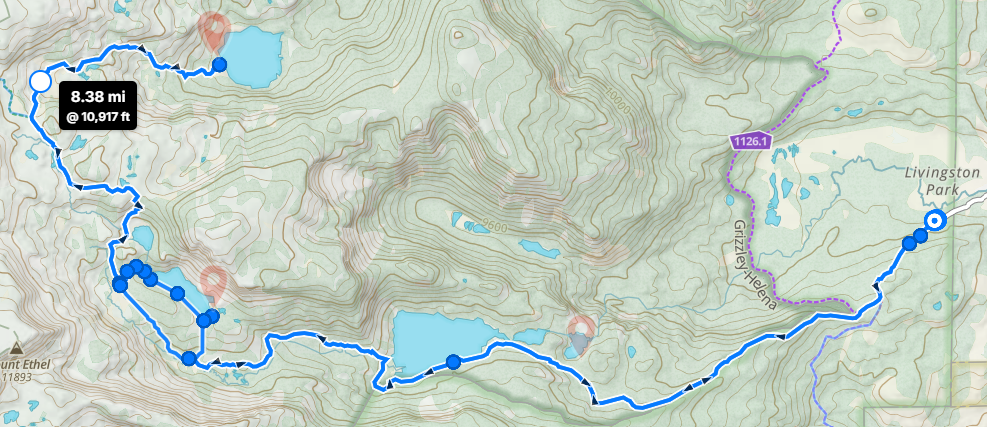

Lake Day! We're headed to Northern Colorado to go play in one of my favorite lakes in the Rockies! For this trip, we'll be out in the Zirkel Wilderness of the Park Range in the Rocky Mountains.
We'll be starting off at the Rainbow Lakes Trailhead about 30 minutes West of Walden. This is an out-and-back route with the sole purpose of getting to Roxy Ann with enough time to play! We'll hike for 3 days and 2 nights, varying the mileage to give us the right amount of time in the right places.You can access the route from the Gaia link here.

We're maximizing our time in the mountains over Labor Day weekend. We'll leave Colorado Springs at 7am to get to the trailhead around noon. After having lunch at the trailhead, we'll head out to Slide Lake about 6 miles away. On Sunday morning, we'll get up and get out to Roxy Ann, only about 4 miles away and play the rest of the day. This will look like free time, so think about fishing, swimming, day-hiking, and whatever other shenanegans you'd like! We'll be camping at Roxy Ann to spend as much time as we can there. On Monday (Labor Day), we'll hike the full 10 miles back to the car, which is mostly downhill. After a group lunch in Warden, reflecting on our amazing weekend in the mountians we'll drive back to Colorado Springs, hopefully making it home around 7pm.
As you all can tell, I am super excited for this trip, so I've been planning away. While I will take care of everything that I can, there are a few tasks that you will have to do yourself. When I say you should do this "Right Now", I mean it should be done well in advance of the trip. Of course if you have any questions that I haven't already answered, ask! (But be prepared, because I love talking about the trip.)
The first and main thing I can not do for you is getting all set up with Colorado Springs Backpackers. The MeetUp is the golden source for all information, so make sure to join the group and check on this trip's event. We ask everyone complete a qualifying hike to make sure they're ready for a hike in the mountains. This trip, although super fun, is also going to be a hard one, so making sure everyone is in shape is paramount to everyone having a good time. Also make sure to sign the waiver on MeetUp prior to the qualifying hike and you should be good to go from there!
From there, the only other thing you'll need to do is keep an eye on the MeetUp event! It'll open for signup once we get a little closer to the trip, but feel free to comment any questions or hype posts in the meantime.
Look at your personal hiking gear (boots, socks, clothes, hats, etc.). The type of stuff you could use on a normal day hike. You will most likely want decent equipment to make your life easier and more comfortable on the trail. This is definitely something to ask about, because there are things that you can take shortcuts with, and things you cannot. If backpacking is becoming a regular part of your life and you don't have your own equipment, you may want to consider getting some. If you are in this position, I am more than happy to talk to you about which equipment you should consider (usually backpack, sleeping bag, and bear can), and to lend you advice about that equipment. I love answering questions. If you do not currently have backpacking gear (like a backpack), reach out to me. I may have some extra gear that I could loan out for the trip, or I can direct you to the best options for renting equipment. Also make sure to check out our Backpacking 101 materials as a great starting point to get familiar with the ins and outs of backpacking.
For a weekend trip, anything goes. I've been known to pick up a costco pizza for my dinners. You can still of course get freeze dried meals if you're concerned on weight (or like them?), but no need to go too hard on yourself for this trip. Make sure you think about each meal of the day, and snacks. There is nothing worse than running out of food on the trail. Besides standard junk food, and nuts, consider tortillas, hot sauce, cheese and fruit with a peel. You can see a sample “Grocery List” at the end of this page. As with anything else, do not hesitate to reach out to me with any questions. Feel free to generically ask me for advice, but prepare yourself for an unnecessarily long and enthusiastic answer.
I'm a big proponent of carpooling, especially when we are driving a ways and hiking in the same day. On Monday, we'll be hiking 10 miles and still driving about 5 hours, so having another person in the car is an important safety net. I'll corrdinate the carpools before the trip once we know who all is coming. As we get closer, if you could let me know if you're available to drive, that would help in getting the carpools started!
Like I said, I love planning, so I will plan and bring as much as I can to make your trip easier and better! This is mostly here to tell you what will be taken care of for you.
This is what allows us to camp in nature for the week. They are very chill in this area, so there are no quotas that we will have to contend with for this one! That being said, I will still let the Forest Service know how many of us will be enjoying the outdoors that weekend through a trailhead issued permit, so please let me know if you can make it.
Obviously, you need to be safe, that's the best way to have fun. I carry a first-aid kits with me. These include the basics like bandages, anti-inflammatory medication, disinfectants, and more. In case of an emergency, I carry a satellite communicaator which we can use to radio for help. In the unlikely case that we use this, it will send off a signal to the nearest emergency responders who will come as quickly as possible. As an extra bonus, we can also send a prerecorded message to a set list of contacts that we are ok. Being prepared to respond to an emergency does not mean we want to deal with one. To that end, we have some simple rules that we go over at the beginning of our trip and expect everyone to follow so we can all enjoy a great trip together. If you have specific medical issues like allergies, make sure you prepare accordingly and let me know about anything I should be aware of.
If I haven't stressed it enough, I want to talk to you about the trip! There's no way I can answer all your questions and fully prepare you for the trip in a welcome letter. I'm looking forward to talking with everyone as the trip gets closer. We're gonna have a great time, so let's get excited about it!
Giving the utmost respect to the mountains, it's important to acknowledge the difficulties that come with traveling on foot through them. We will be above 9000ft in elevation for the majority of the trip, hiking up to 10 miles a day with packs. All of you are definitely capable of doing this, but being in shape will increase the amount of fun you will have. Our qualifying hike helps make sure you can do the trip, but check out our ruckknig events to train up even more and make sure you're giving yourself the best chance of having a good time on trail. To reiterate, this is nothing to shy away from, everyone can do this, I just want everyone to have as much fun as possible.
Backpacking is definitely a cheap vacation when compared to other alternatives, but nothing comes without some cost. Here's a breakdown of the cost with some estimates to give you an idea of what to expect. (Keep in mind, these are estimates and costs can vary.)
| Item | Cost |
|---|---|
| Dinners* | $20 |
| Gas | $25 |
| Breakfast/Lunch/Snacks* | $25 |
| Food while Travelling* | $25 |
| Bear Can Rental** | $25 |
| Backpack Rental** | $64 |
| Sleeping Bag** | $45 |
| Total Without Rental*** | $95 |
| Total With Rental*** | $229 |
* These items will be bought personally as opposed to in a group and paying it back ** May not be necessary, talk to us before renting *** This does not include any personal equipment that you may need (non-recurring costs)